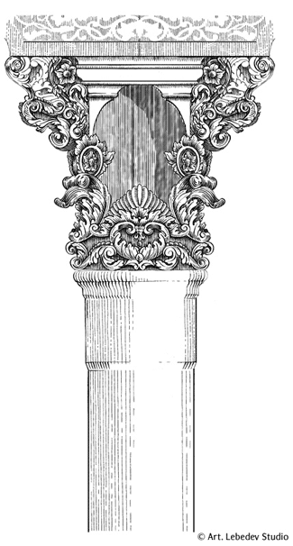
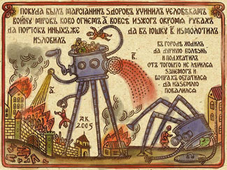
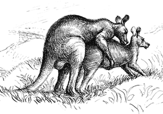
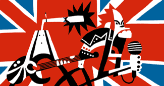

ДАЕШЬ ПЛАГИАТ
Советы по съему
Позволю себе дать важный и полезный совет начинающим, а также переосмысливающим свое творчество художникам. Вот он: не слушайте никого. Do your best and don`t worry, как поется в одной песне, старайтесь и все будет хорошо.
Если конкретнее, то я имею что возразить, например, популярным среди обитающих в интернете художников советам от Яны Франк. В частности, главе про «Придется из всего, что хорошо получается, выбрать одно». По большей части она, за отсутствием здесь института иллюстраторских агентств как такового, несет для нас интерес скорее страноведческий, однако идея чистить портфолио от работ хороших, но сделанных в непривычном для автора стиле курсирует, тем не менее, в умах, надеющихся, по всей видимости, примерным поведением приблизить день, когда агентства таки появятся.
Это вообще приятный совет — следуя ему, можно, видимо, заметно облегчить жизнь и себе и гипотетическим агентам. Но я, например, в принципе против того, чтобы облегчать себе жизнь. Тут опять встает вопрос о конфликте профессионального и творческого, но все-таки давайте оставим за собой моральное право на некий невидимый шарф и берет. Все-таки мы с вами как-никак художники, для нас желание развиваться вширь должно бы перевешивать сомнительную, повторюсь, опасность испугать заказчика более чем одним навыком или (еще страшнее) всю жизнь получать заказы на стилизацию под какие-нибудь дореволюционные плакаты.
Виктор Платонов

Прошу прощения, что сегодня привожу мало примеров — это потому, что их мало. Мне сдается, что иллюстраторы в массе недооценивают свою способность к органичной стилизации. Предпочитают считать себя хранителями и единоличными владельцами собственного стиля, который, стоит ему раз изменить с чем-то еще, возьмет да и уйдет. Наслушались добрых советов, вероятно. Или же попросту ленятся. Иметь свой стиль вовсе неплохо, но, как говорит один мой товарищ, «без фанатизма». Стиль, как известно, не главное. Так что еще я предостерег бы начинающих и переосмысливающих свое творчество художников следовать совету номер 10 от Валеры Гольникова — «Постарайтесь никого не копировать».
Мой контрсовет такой: постарайтесь чего-нибудь еще. Все мы варимся в одной каше, и оригинальных художников, строго говоря, не бывает вообще. Даже всевозможные революционеры от искусства ограничены всем тем, чему они, пусть даже успешно, не подражают.

Так вот, не бойтесь снимать, друзья. Есть разница между «снимать», «вдохновляться» и «находиться под влиянием», и я именно про «снимать» — механически, технически, по факту, а не по ощущению — ощущение нужно бы сохранить свое. Если у вас в принципе есть, что сказать миру, никуда не денетесь, все равно расскажете, пусть на не вами придуманном языке. Богатый словарный запас никому еще не вредил. Научитесь новым приемам и постепенно выработаете свои собственные. Все равно ведь стопроцентной стилизации не может быть, вернее, это уже называется подделкой. Всегда должна оставаться некая как бы дистанция, некая ирония, что ли.
Иван Величко для duck design
Если же сказать вам нечего, то ничего и не остается, как только снимать. Глядишь, и «свое» придет. Не придет, так хотя бы научитесь чему-то. Был бы хороший вкус. Высококлассный эпигон в нашей профессии завсегда ценнее ни на что не годного оригинала. Не говоря уже о том, что артдиректорам часто, слишком часто, нужна стилизация. Мастера по этой части всегда в большом дефиците.

Отмечу, стилизация совершенно не подразумевает творческого самоубийства (хотя и такое бывает, к сожалению), напротив, очень бодрит. Это я знаю по себе (если позволите) — в свое время, получив от редакции Rolling Stone задание подснять стиль Пабло Лобато, я схватил мощнейший творческий подъем.

Вот еще один мой совет начинающим: начинайте с беззастенчивого копирования. Во-первых, это честнее, а во-вторых, начав копировать и отрастив по ходу дела что-то свое, вы окажетесь в гораздо более выгодном положении, чем если в какой-то момент станет понятно, что вы — не более, чем эпигон. Воровать, так всю невесту целиком, а не шарить в темноте по карманам. Кстати говоря, ведь совершенно необязательно копировать кого-то одного. Ничто не мешает скрестить два или более близких вам стиля — и вот, пожалуйста, что-то новое, поди разбери откуда ноги растут. Постмодернизм! Не нужно развивать в себе предсказуемость — со временем она непременно вас догонит. Умейте удивлять, раз вы художник.
Развивайте лучше вменяемость. Это гораздо более ценное и редкое качество. Не бойтесь артдиректора: в большинстве своем это все-таки нормальные люди; а часто и талантливые. Вменяемый артдиректор вполне способен по одной работе определить, что может художник, и если нужно, скорректировать его по стилю; с невменяемыми же лучше не связываться. Еще совет: встретив невменяемого, не постесняйтесь отказаться от работы. Запритесь дома, поголодайте месяц, но вместо того, чтобы пополнить портфолио еще одной удушенной правками работой, нарисуйте такую красоту, что все артдиректора, образно выражаясь, приползут к вам на четвереньках. И вот тогда — выбирайте нормальных. Берегите нервы. Будьте вменяемыми.